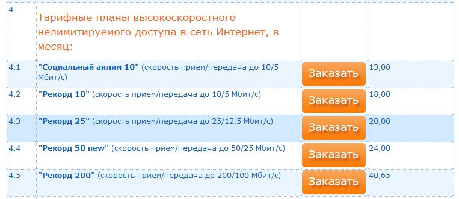
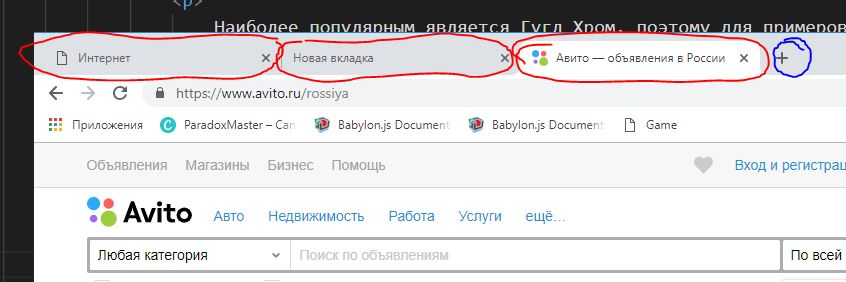
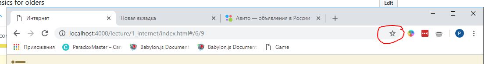
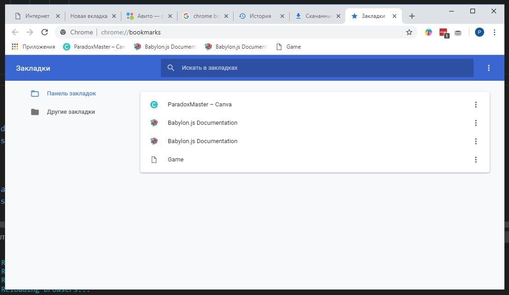
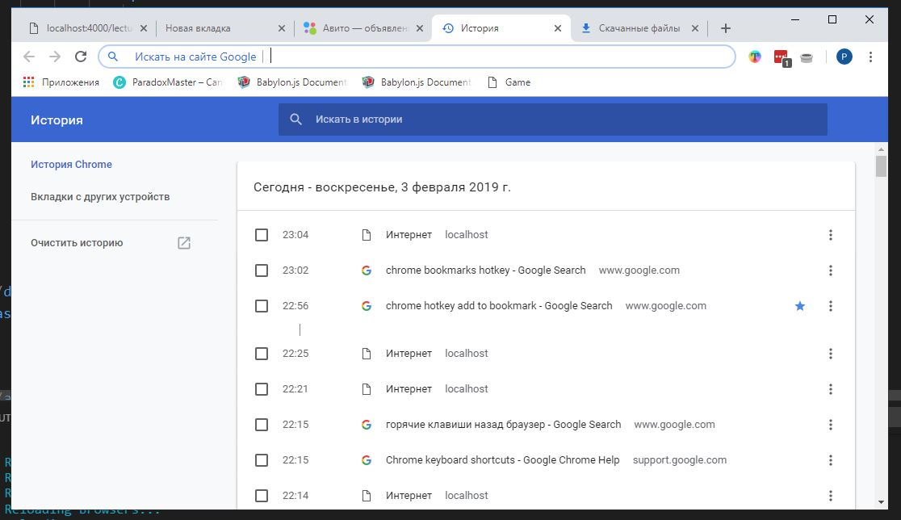
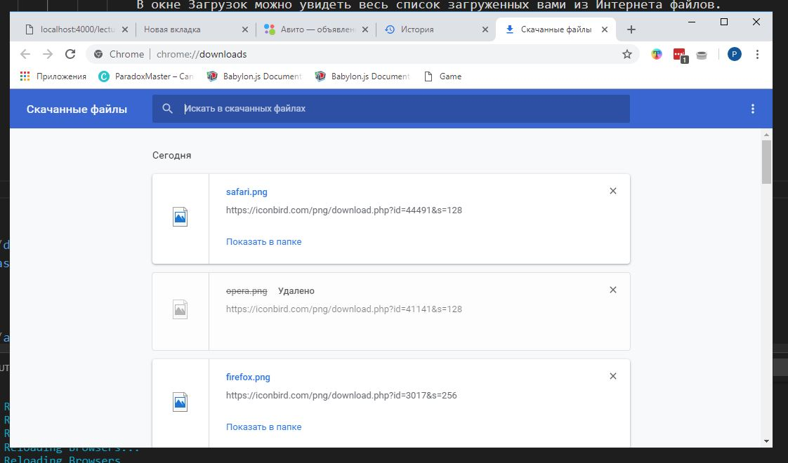
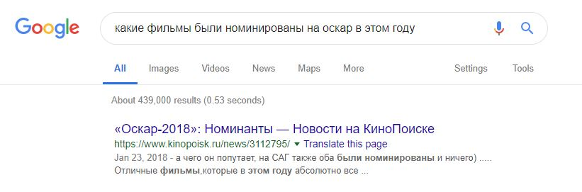

Сеть Интернет
Основы, возможности, развитие на современном этапе
Содержание лекции
Интернет
Всего за 30 лет Интернет стал неотъемлемой частью жизни современного общества.
Наверное, уже не осталось людей, которые не слышали бы о нём.
В 21 веке, любой современный человек должен уметь работать с Интернетом, пользоваться поиском и понимать, как ориентироваться в браузере.
Возможности
Сегодня, с помощью Интернета, люди могут, не выходя из дома, общаться с кем угодно, переписываться, обмениваться любой информацией, совершать покупки, творчески проявлять себя, делиться знаниями и умениями, зная, что их идеи и мнения будут свободно открыты для всего мира.
Что есть Интернет
Но что это вообще такое, Интернет?
По своей сути, Интернет - это просто сеть соединённых компьютеров по всему земному шару.
Когда вы подключаете у себя Интернет, это значит, что ваше устройство также присоединяется ко всему этому набору связанных компьютеров.
Сеть, сеть...
Может быть не понятно, что здесь означает слово Сеть.
Сетью называют комплекс из нескольких машин (компьютеров), между которыми налажено физическое соединение, с возможностью передачи информации между этими устройствами.
Соединение
Устройства друг с другом могут быть соединены:
- Обычным кабелем
- Оптоволоконным кабелем
- Беспроводным соединением (WiFi)
В первом случае передаваемая информация закодирована в электрическом сигнале, во втором случае передаётся с помощью фотонов света, в третьем - с помощью радиоволн.
Виды сетей
Сети бывают глобальными или локальными.
Глобальная сеть одна, и это, собственно, сама глобальная сеть Интернет. Она связывает миллиарды компьютеров по всей планете.
Локальных же сетей может быть много. Локальная сеть - это сеть из ограниченного количества компьютеров, которая не подключена к глобальной сети Интернет.
Например, здесь, в учебном заведении, все компьютеры соединены в локальную сеть. Это значит, что можно обмениваться информацией между этими компьютерами, но из глобальной сети Интернет всех их не будет видно.
Интернет в локальной сети
Как же получается работать с глобальной сетью из компьютеров, находящихся в локальной сети?
Просто в локальной сети находится один компьютер, который подключен и к локальной сети, и, одновременно, к глобальной сети Интернет.
И когда компьютер из локальной сети хочет зайти в Интернет, он сначала соединяется с этим "открытым" компьютером, и уже через него общается с глобальной сетью.
Характеристики сети
Главной характеристикой сети для пользователя является скорость передачи данных. Если мы говорим о сети Интернет, то можно сокращать до скорости Интернета.
Скорость передачи данных определяет, как много информации можно передать за единицу времени, и зависит от физических свойств сети (пропускной способности каналов связи), и искусственных ограничений, накладываемых Интернет провайдерами.
Количество информации
Для начала, нужно поговорить о количественной характеристике информации.
Количество, или объём цифровой информации, измеряется в специальных единицах измерения битах или байтах.
Все цифровые информационные системы построены на двоичной логике. И бит - мельчайшая единица хранения информации (значение 0 или 1).
1 Байт - это 8 бит.
Путаница между битами и Байтами
В разных источниках используются разные единицы измерения, где-то Байты, где-то биты, поэтому легко запутаться, а разница между ними существенная - Байты в 8 раз больше битов.
Когда измеряется, сколько весит какой-либо файл на компьютере, обычно используются единицы измерения Байты.
А когда измеряется скорость передачи данных, обычно используются единицы измерения биты.
Обозначения
В обозначениях единицы измерения битов используется маленькая буква б.
А в обозначениях единицы измерения Байтов - большая буква Б.
Объём 4 кб означает 4 килобита, или 4 тысячи бит. 4 кб это 500 Байт.
А объём 4 Кб означает 4 килобайта, или 4 тысячи байт. 4 Кб это 32 кб.
Единицы измерения
| 1 байт | 8 бит |
| 1 КБ | 1000 Байт |
| 1 МБ | 1000 Килобайт |
| 1 ГБ | 1000 Мегабайт |
| 1 ТБ | 1000 гигабайт |
| 1 ПБ | 1000 терабайт |
Скорость Интернета
Скорость передачи данных (скорость Интернета) обычно измеряется в битах в секунду, и показывает, сколько информации можно передать по сети за 1 секунду.
Нормальной скоростью Интернета сейчас считается скорость порядка 2 - 8 Мб/с.
А для оптоволоконного подключения 20 - 40 Мб/с.
Входящее и исходящее подключение
Ещё нужно разделять входящее подключение и исходящее сообщение.
Входящее подключение используется для передачи данных от других компьютеров сети к вашему компьютеру.
Исходящее подключение используется для передачи данных от вашего компьютера к компьютерам в сети.
Скорость входящего подключения влияет на то, как быстро открываются сайты и скачиваются файлы. А от скорости исходящего подключения зависит, как быстро будет происходить передача ваших файлов в интернет.
И скорости этих подключений обычно отличаются.
Пример
Взглянем на интернет-страницу ByFly со списком их тарифов:
Можно заметить, как отличаются скорости приёма/передачи - это и есть скорости для входящего подключения и исходящего.
Измерение
Проверить свою скорость Интернета можно, например, с помощью сайта Яндекс.Интернетометр, по этой ссылке:
Ссылка на ИнтернетометрУ меня он показал вот таки вот значения:

Краткая история
Кажется, что Интернет появился совсем недавно, ещё 20 лет назад никто не знал такого слова, но его история несколько глубже.
Интернет стал логичным продолжением развития телеграфных, а затем телефонных линий связи.
Первые шаги
Идеи соединения нескольких компьютеров возникли почти сразу же вместе с появлениями самых первых компьютеров в 1950-х годах в США. Поэтому можно считать, что развитие Интернета напрямую связано с развитием компьютеров (ЭВМ - электронных вычислительных машин).
Арпанет
В 1960-х годах Министерство Обороны США активно экспериментировало с возможностями сетевых подключений, и именно тогда была создана первая компьютерная сеть Арпанет.
В 1969 году было успешно отправлено и получено первое сообщение в сети Арпанет.
Кстати, сообщения, которые передаются между компьютерами в сетях, называются Пакетами.Расцвет Арпанета
Изначально сеть Арпанет разрабатывалась для военных целей, но ей сразу же нашли применение в нормальной жизни. В то время в США компьютеры находились либо в исследовательских лабораториях, либо в разных государственных университетах.
И в 1970-х годах было решено сделать из Арпанета общую университетскую сеть, объединявшую все учебные заведения США.
Появление Интернета
В разных исследовательских центрах создавались свои разные сети, и возникла проблема их общего соединения.
Тогда в 1974 году был разработан единый сетевой стандарт Интернета, который унифицировал сетевые технологии, и был призван объединить все существующие и разрозненные сети в одну общую.
Процесс перехода длился до конца 1980-х годов, Интернет заменил Арпанет.
Мировое распространение
В это время, в 1980-х, стали активно появляются коммерческие организации, предлагающие за деньги подключить кого-угодно к глобальной сети.
К сети Интернет стали подключаться компьютеры из разных стран, она постепенно начала оплетать весь земной шар.
В начале 1990-х годов появилась, так называемая, Всемирная Паутина (веб), и это вызвало настоящий взрыв популярности Интернета.
Всемирная Паутина
Всемирная Паутина - это то, что сейчас главным образом и понимают под словом Интернет. Это информационное пространство, состоящее из множества веб-ресурсов (сайтов), доступных через веб-браузер по ссылкам, через сеть Интернет.
В 1990 году появились первые сайт и первый веб-браузер, для доступа ним.
Взрыв популярности
Создание Всемирной Паутины стало настоящим фурором.
С помощью неё любой человек мог сделать доступным для всего мира любой материал, поделиться опытом и знаниями, выложить в сеть свою информацию, чтобы любой участник сети мог спокойно получить к ней доступ.
Стали активно появляться различные веб-сервисы, такие как электронная почта, социальные сети, электронная коммерция, мессенджеры, форумы и многое другое.
Развитие
С этого момента Всемирная Паутина, или просто Интернет, начал развиваться с невообразимой скоростью, проникая во все участки жизни человека.
Сейчас у любой организации есть свой сайт в Интернете, практически у любого человека есть свои собственные аккаунты на разных социальных площадках, большинство операций, которые ещё недавно нужно было совершать лично, отправляясь в какое-то место, сейчас можно выполнять онлайн через Интернет из своего дома.
С появлением мобильных технологий прогресс стал двигаться ещё в несколько раз быстрее.
И задача современного человека - не отставать от этого прогресса, а стараться следовать и принимать все новшества нового информационного мира.
Ресурсы Всемирной Паутины
По своей структуре, Всемирная Паутина состоит из веб-сайтов и веб-приложений.
Веб-сайты - набор веб-страниц, предоставляющих какую-либо информацию на обозрения пользователей. Стандартные примеры веб-сайтов: новостные сайты, сайты-визитки, сайты компаний и организаций, форумы, блоги и т.д.
Веб-приложение - также набор веб-страниц, но предназначенных главным образом не для предоставления информации, а для совершения каких-либо активных действий со стороны пользователя. Например, интернет-магазины, игры, интернет-банкинг, браузерные программы для творчества, сохранения файлов в облаке и т.д.
Зачастую эти категории без разделения называют просто сайтами.
Открытый доступ
На любой сайт вы можете зайти, если знаете его адрес, название, или хотя бы примерное описание и его тематику.
У каждого сайта есть свой уникальный адрес. Например:
- vk.com
- youtube.com
- yandex.by
- google.com
- ok.ru
- mail.ru
- tut.by
- onliner.by
- kufar.by
Работа со Всемирной Паутиной
Большинство Интернет ресурсов построено по Клиент-Серверной архитектуре.
Это значит, что во взаимодействии всегда участвуют 2 стороны: Сервер и Клиент.
Сервер - это компьютер в сети, на котором хранится какая-то информация: сайт, видео, файлы, что угодно.
И Клиент - это программа на вашем компьютере, через которую вы отправляете запросы на нужные вам данные, которые приходят с серверов.
Браузер
Программы, выступающие в роли интернет-клиентов, называются Браузерами.
Браузер - это окно в вашем компьютере ко Всемирной Паутине, он нужен, чтобы получить доступ ко всему многообразию ресурсов Интернета.
Виды браузеров
Программы браузеры бывают разными, но предназначены для одного и того же.
К основным браузерам относятся:
| Гугл Хром (Google Chrome) | |
| Мозилла Файерфокс (Mozilla Firefox) | |
| Сафари (Safari) для Apple |
Интерфейс браузера
Все браузеры имеют похожий интерфейс, так что нет большой разницы, каким пользоваться.
Наиболее популярным является Гугл Хром, поэтому для примеров мы будем использовать именно его.
Интерфейс браузера

Вкладки
Основой интерфейса любого браузера является отображение вкладок.
Одна вкладка представляет собой одну открытую веб страницу.
Одновременно может быть открыто сколько угодно вкладок, и между ними можно перемещаться, переключая их мышью, или сочетанием клавиш Ctrl+Tab.
Вкладки
Для открытия новой вкладки там присутствует специальная кнопка (помечена синим). Также новую вкладку можно открыть сочетанием клавиш Ctrl + T.
Адресная строка

Ниже вкладок располагается адресная строка - один из важнейших элементов браузера. Здесь можно вводить адрес интересуемого Интернет ресурса, или строку поискового запроса, чтобы найти желаемую информацию в Интернете.
На скриншоте она отмечена синим маркером.
Навигация
Справа от адресной строки располагаются кнопки навигации - стрелки вперёд и назад.
Во время работы с Интернет ресурсами вы постоянно переходите с одной веб-страницы на другую. И чтобы иметь возможность вернуться назад к страницам, посещённым ранее (только в рамках текущей вкладки), и используется кнопка Назад (стрелка влево).
Кнопка Вперёд используется после нажатий кнопки Назад, если вы хотите вернуться к тем страницам, на которых вы были раньше, и с которых вернулись назад.
С помощью горячих клавиш можно делать действия навигации Назад и Вперёд сочетаниями Alt + ← и Alt + →, соответственно.
Перезагрузка страницы
Рядом с кнопками навигации находится кнопка Перезагрузки страницы, с рисунком закрученной стрелки.
По нажатию на эту кнопку, браузер отправит запрос в Интернет, чтобы заново загрузить с сервера текущую страницу.
Это бывает необходимо, чтобы обновить информацию на странице, если ожидается её изменение, или когда на странице что-то сломалось и работает некорректно.
Для перезагрузки текущей страницы можно нажать на клавиатуре F5.
Закладки
С правой стороны от адресной строки находится кнопка Добавления в Закладки.
Добавление в Закладки нужно для сохранения текущей страницы, чтобы не потерять её адрес, и иметь возможность вернуться на неё в будущем.
Чтобы добавить текущую страницу в Закладки можно использовать сочетание клавиш Ctrl + D.
Специальные вкладки
В каждом браузере есть набор специальных вкладок (или окон), которые нужны для определённых задач.
К ним можно отнести:
- Окно закладок
- История посещения
- История загрузок
Окно закладок
Чтобы попасть на окно закладок, нужно нажать сочетание клавиш Ctrl + Shift + O.
На этой вкладке отображается полный список всех ваших закладок, т.е. тех сайтов, на которые вы их поместили.
Можно, например, добавить в закладки все сайты, которые вы часто посещаете, и потом заходить на них через это окно. Чтобы упростить процесс поиска.
Или же, наоборот, добавлять в закладки страницы, которые вы посещаете редко, но не хотите их потерять или забыть. Они навсегда останутся в закладках, и их легко можно будет открыть.
Окно закладок
История посещения
В любом браузере есть возможность просматривать свою историю посещения веб-страниц.
В окне истории посещения можно найти адреса всех сайтов, которые вы когда-либо посещали, и при необходимости, заново открыть интересующую страницу.
Открывается История сочетанием клавиш Ctrl + H.
Здесь же можно Очистить историю, чтобы удалить информацию о том, какие сайты вы посещали.
История посещения
История загрузок
В окне Загрузок можно увидеть весь список загруженных вами из Интернета файлов. Будь то видео, музыка, картинки или документы, - всё, что вы скачиваете себе на компьютер будет отображаться в этом списке.
Через это окно удобно находить, где на вашем компьютере находится то, что вы скачали.
Открывается окно Загрузок сочетанием клавиш Ctrl + J.
История загрузок
Поиск
Ключ к умению использовать Интернет - это умение правильно пользоваться Интернет поиском.
Чтобы зайти на сайт, нужно знать его адрес. И было бы ужасно, если бы не было никакой возможности получить желаемую информацию или доступ к ресурсам, не зная точного адреса, идентифицирующего данный веб-ресурс.
И поэтому существуют сервисы (сайты) поиска, для того, чтобы весь Интернет был открыт каждому, и любой человек мог найти нужный ему Интернет-ресурс, зная только его тематику и интересующий вопрос.
Поисковые сайты
Поисковых сайтов существует множество, но среди них, без всяких вопросов, выделяется Google, опережающий всех конкурентов по качеству и возможностям поиска.
Однако для русскоязычного сообщества также неплохо с поиском справляется Яндекс, т.к. он нацелен именно на ресурсы на русском языке, и адаптирован к нашим отечественным сайтам.
Ещё можно выделить поисковый сайт DuckDuckGo, который концентрируется на обеспечении безопасности, приватности и анонимности вашего поиска.
Ключ к Интернету
Главное при работе с Интернетом, и поиском в частности, - это умение правильно сформулировать свой запрос.
Если вы сможете правильно описать то, что вас интересует и что вы пытаетесь найти, то вы обязательно это найдёте.
Это умение не даётся сразу, а приобретается с опытом работы в Интернете. Необходимо потратить время, чтобы понять, как лучше формулировать поисковые запросы и формировать мысли.
Общее правило
Главное правило поиска можно сформулировать так:
Нужно сформировать такой запрос, который минимальным количеством слов максимально точно опишет вашу идею.
Поисковый запрос может не иметь чёткой структуры законченного предложения, а состоять просто из бессвязного набора слов.
Главное, чтобы по этим словам можно было наиболее точно и однозначно определить цель вашего поиска.
Пример
Например, скоро состоится церемония награждения премии Оскар, и я хочу узнать, какие фильмы были номинированы на неё в этом году.
Если я наберу в поиске фразу "какие фильмы были номинированы на оскар в это году", то получу неверный ответ:
Продолжение
А чтобы получить нужный мне результат достаточно сформулировать мой запрос как "оскар 2019".
И вот что выдаст поиск:

То, что нужно!